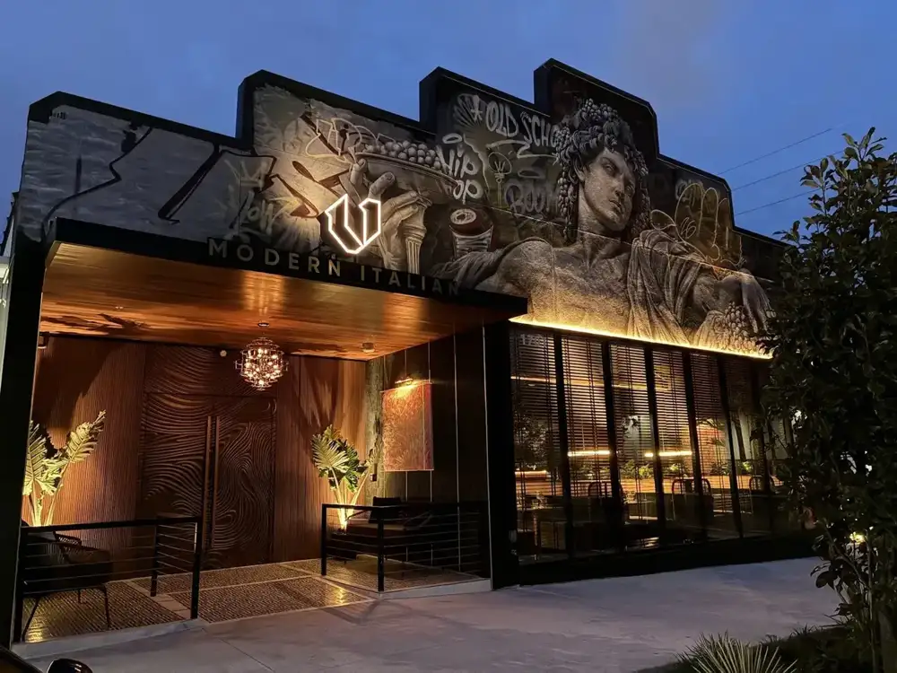
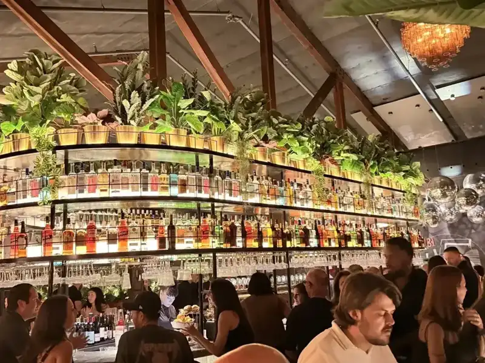
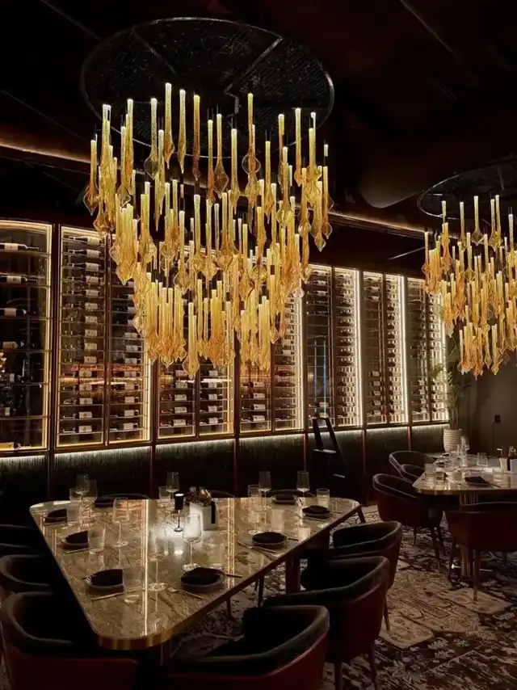
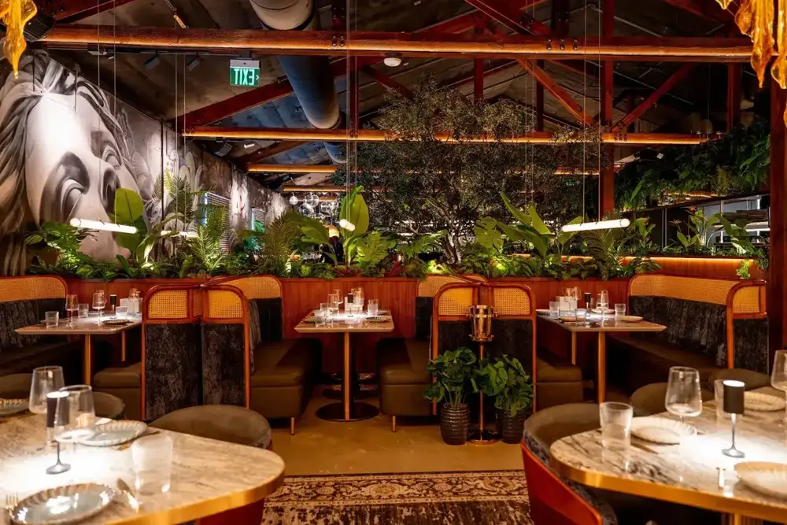
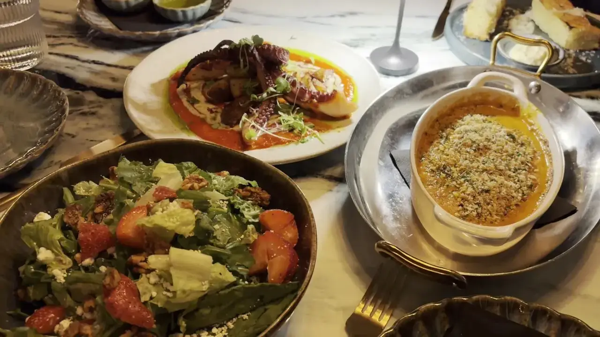
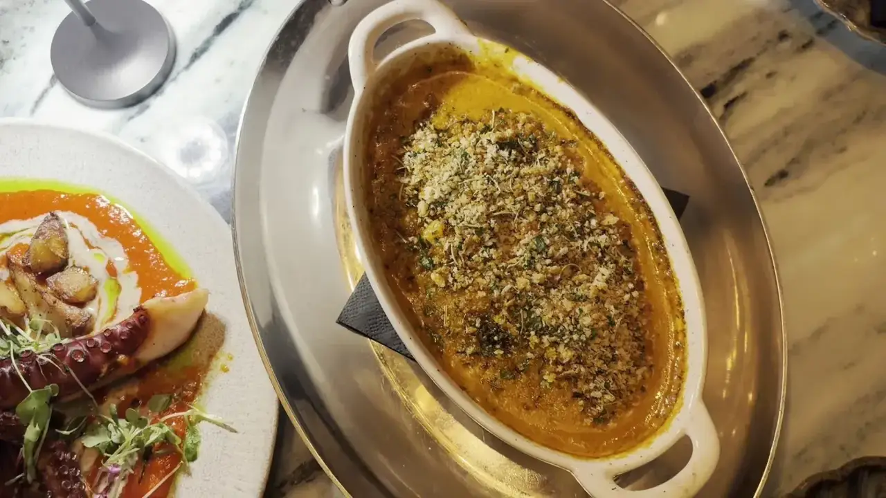

Antipasti and pasta
Antipasti to share, like the marinara meatballs and burrata al limoncello, then primi such as cacio e pepe, lobster ravioli and a black truffle pipette.
Dinner, drinks and late nights in a 7,400-square-foot room of dark walnut, marble and velvet, under a mural by PichiAvo, with a DJ spinning.

Where to find us
1701 W North A St, Tampa, FL 33606
Mon 4–11 PMTue 4–11 PMWed 4–11 PMThu 4 PM–12 AMFri 4 PM–1 AMSat 3 PM–1 AMSun 3–11 PM
DirectionsReservations recommended
Come feed all your senses
Built to be enjoyed in courses, with a cocktail to start.
Antipasti to share, like the marinara meatballs and burrata al limoncello, then primi such as cacio e pepe, lobster ravioli and a black truffle pipette.

USDA Prime filet and ribeye, 28-day dry-aged, a Wagyu strip, grilled branzino and lamb shank.

A martini tower and a cocktail carousel for the table, aperitivi, and the cannoli concierge, filled tableside.





4.7 ★ · 668 Google reviews
Such a vibe ! Great music, beautiful atmosphere, fun seating. Nice cocktails, good food. Mingling crowd, excellent service. We loved this place and if you want to lounge, dance, walk or chill it has it all. Our server Ashley was great we enjoyed her knowledge and had a great time.
We had a great time Sunday afternoon (it wasn’t too crowded at the time). The food and the drinks were great, beautiful interior. They have a private room for special events. Try lemon dessert and the cannoli table side experience! Max Anthony took great care of us. Note: You may want to bring a blazer or wear long sleeve as it was rather chill.
I found out about this place through Google for finding a spot for a nice dinner date with music for my birthday. The atmosphere was phenomenal and very nice! The music is very loud like in the clubs, but it is very entertaining with great songs that DJ played. This is perfect for a date night or out with friends to celebrate! The foods were so delicious!!
Meet the crew
V Modern Tampa brings V's signature energy to a bold space on West North A Street, designed for dinner, drinks and late nights. Dark walnut, marble and rich velvet set the tone, large murals by PichiAvo cover the walls, and a sculptural olive tree and a glowing granite bar anchor the room.
There is an open dining room, intimate seating, two private dining spaces and an open kitchen that brings the action into the room. Reviewers mention servers Max Anthony and Ashley by name, and the music, which one guest called loud like a club.

Find the truck
1701 W North A St, Tampa, FL 33606
Reservations are required, guests say, so book a table. For parties larger than 10, email the restaurant. It can run chilly inside, so one guest suggests a blazer or long sleeves.